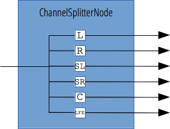

{{APIRef("Web Audio API")}}
The ChannelSplitterNode interface, often used in conjunction with its opposite, {{domxref("ChannelMergerNode")}}, separates the different channels of an audio source into a set of mono outputs. This is useful for accessing each channel separately, e.g. for performing channel mixing where gain must be separately controlled on each channel.

If your ChannelSplitterNode always has one single input, the amount of outputs is defined by a parameter on its constructor and the call to {{domxref("BaseAudioContext/createChannelSplitter", "AudioContext.createChannelSplitter()")}}. In the case that no value is given, it will default to 6. If there are fewer channels in the input than there are outputs, supernumerary outputs are silent.
| Number of inputs | 1 |
|---|---|
| Number of outputs | variable; default to 6. |
| Channel count mode | "explicit" Older implementations, as per earlier versions of the spec use "max". |
| Channel count | Fixed to the number of outputs. Older implementations, as per earlier versions of the spec use 2 (not used in the default count mode). |
| Channel interpretation | "discrete" |
ChannelSplitterNode object instance.No specific property; inherits properties from its parent, {{domxref("AudioNode")}}.
No specific method; inherits methods from its parent, {{domxref("AudioNode")}}.
{{page("/en-US/docs/Web/API/AudioContext.createChannelSplitter","Example")}}
{{Compat}}